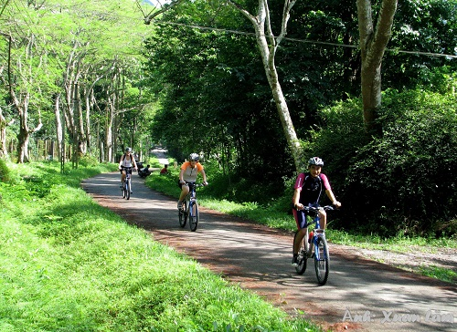
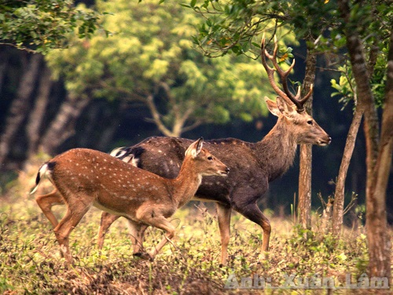

Vườn quốc gia Cúc Phương – Viên ngọc quý về sinh thái rừng
Vườn Quốc gia Cúc Phương nằm trên địa phận 3 tỉnh Ninh Bình, Hòa Bình và Thanh Hóa, nơi đây không chỉ đặc biệt về một thảm thực vật xanh được nuôi dưỡng và phát triển qua hàng ngàn năm, mà còn là nơi cư trú của hàng trăm loài động vật quý hiếm, Cúc Phương là một trong những viên ngọc quý về sinh thái rừng đã trở thành điểm đến yêu thích của nhiều du khách trong nước và quốc tế.
Cúc Phương là vườn quốc gia đầu tiên của Việt Nam được thành lập năm 1962, cách Hà Nội khoảng 120km. Với diện tích trên 22.000ha (trong đó ½ diện tích là núi đá vôi), Cúc Phương là hình ảnh thu nhỏ tiêu biểu của rừng nhiệt đới Đông Nam Á, là nơi cư trú
của trên 2.200 thực vật bậc cao và rêu (trong đó có nhiều giống lan quý hiếm, các loại cây thuốc và nhiều loài cây được ghi trong Sách Đỏ của Việt Nam), 122 loài bò sát, 66 loài cá, gần 2.000 loài côn trùng, 135 loài thú (nhiều loài thú
quý hiếm như Voọc quần đùi trắng, Báo gấm, Gấu ngựa) và hơn 300 loài chim cư trú.
Với đặc trưng mưa rừng nhiệt đới, xanh quanh năm, Cúc Phương có khí hậu rất mát mẻ, nhất là vào mùa hè. Đến đây du khách sẽ được thả hồn giữa không gian xanh mát, trong lành của núi rừng, chiêm ngưỡng vẻ đẹp và những khoảnh khắc kỳ diệu của thiên nhiên,
tham gia cắm trại cùng các hoạt động khám phá mạo hiểm, nghiên cứu văn hóa, lịch sử hay hòa nhịp vào cuộc sống của cộng đồng người dân địa phương.

Thời điểm cuối xuân, đầu hạ, tầm từ tháng 4 đến cuối tháng 5 Vườn Quốc gia Cúc Phương đẹp như miền cổ tích, khi ấy là mùa bướm sinh sản, từng đàn bướm đủ màu sắc cứ thế bừng tỉnh giấc, bay lượn hòa cùng ánh mặt trời lấp lánh, vẽ nên một khung
cảnh đầy huyền ảo và mơ mộng mà bất cứ ai một lần được chiêm ngưỡng ắt hẳn sẽ không thể nào quên.
Sự đa dạng, phong phú của hệ sinh thái đã đưa Cúc Phương trở thành điểm đến nổi tiếng không thể bỏ qua với những du khách yêu thích du lịch trải nghiệm và thiên nhiên hoang dã, nơi đây thực sự là viên ngọc quý về hệ sinh thái rừng.